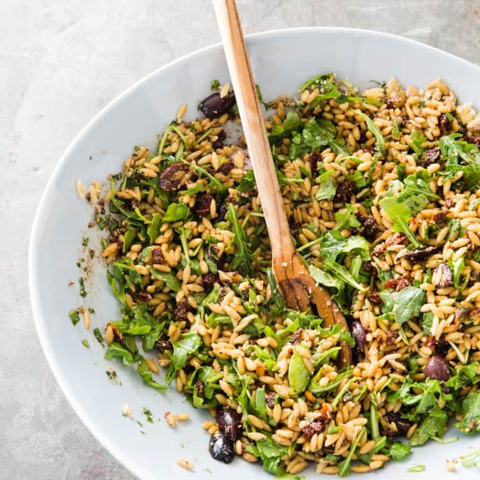

Orzo Salad
Orzo Salad
Orzo Salad

A Yummy Mediterranean Dish
Description
A light, delicious salad consisting of Orzo pasta,arugula,sun-dried tomatoes, klamata
olives,pine nuts and an olive oil,garlic and vinagrette dressing
Ingredients
- 1 1/4 Cup of Orzo pasta
- Salt and pepper
- 1/4 Cup extra-virgin olive oil, plus extra for serving
- 3 Tablespoons of basalmic vinegar
- 2 garlic cloves,minced
- 2 Ounces (2 cups) baby arugula,chopped
- 1 Ounce (1/2 cup) Parmesan cheese, grated
- 1/2 Cup oil-packed sun-dried tomatoes, minced
- 1/2 Cup pitted Klamata olives, halved
- 1/2 Cup chopped fresh basil
- 1/4 Cup pine nuts, toasted
Preparation Steps
1. Toast 1/4 cup of pine nuts in skillet
2. Bring 2 quarts of water to a boil in a large pot. Add Orzo pasta and 1 1/2
tea-spoons of salt and cook, stirring often, until al-dente.
Drain orzo and transfer
to rimmed baking sheet. Toss with 1 tablespoon of olive oil
and let cool completely,
(about 15 minutes.)
3. Whisk remaining 3 tablespoons oil,vinegar,garlic,
1/2 teaspoon salt, and
1/2 teaspoon pepper together in a large bowl. Add arugula,
Parmesan, tomatoes, olives
basil, pine nuts, and orzo and toss gently to combine.
Season with salt and pepper to
taste. Let salad sit until flavors meld (about 30 mins.)
Serve, drizzled with extra oil.
(salad can be refrigerated for up to 2 days.)
This recipe is a reproduction of the recipe created by "America's Test Kitchen"
for learning how to produce a website.